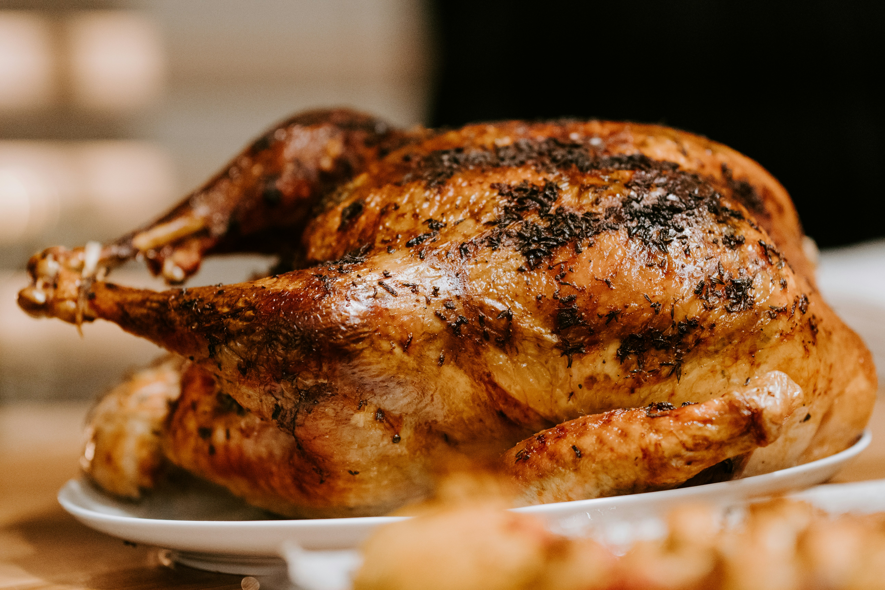

Café robusta cultivé dans la région de la Sangha, torréfié
localement pour un arôme puissant et une belle créma.
Prix : 2 000 FCFA
Ingrédients : Grains de café robusta de la Sangha, eau
Eau de coco Jus de noix de coco fraîche
Eau de coco fraîche
Eau de coco naturelle extraite de noix de coco fraîchement
cueillies, servie glacée dans sa noix.
Prix : 3 000 FCFA
Ingrédients : Eau de coco naturelle, pulpe de coco
fraîche
Spécial du jour

Spécial du jour Poulet Moambe aux arachides
Poulet Moambe
Mise en avant : Plat vedette de la semaine
Recommendation du chef
Poulet mijoté lentement dans une onctueuse sauce aux arachides et
aux épices traditionnelles, accompagné de riz blanc parfumé et de
légumes frais. Un classique incontournable de la cuisine congolaise !
Prix : 15 000 FCFA
Ingrédients : Poulet, arachides, huile de palme,
ail, gingembre, oignons, tomates, piment, riz, légumes frais, sel
Comparatif des prix
Comparaison des prix par catégorie de plats Le Congo Gourmet
Catégorie
Nombre de plats
Prix minimum
Prix maximum
Entrées
4
3 000 FCFA
5 500 FCFA
Plats principaux
6
7 000 FCFA
12 000 FCFA
Desserts
4
3 000 FCFA
4 500 FCFA
Boissons
6
2 000 FCFA
3 000 FCFA
Spécial du jour
15 000 FCFA
Horaires d'ouverture
Lundi
11 h 00 – 22 h 00
Mardi
11 h 00 – 22 h 00
Mercredi
11 h 00 – 22 h 00
Jeudi
11 h 00 – 22 h 00
Vendredi
11 h 00 – 23 h 00
Samedi
10 h 00 – 23 h 00
Dimanche
10 h 00 – 21 h 00
Fermé le : 1ᵉʳ janvier, 1er mai, 25 décembre.
Horaires des jours fériés
Les jours fériés, le restaurant est ouvert de 12 h à 18 h (sauf
le 1er mai, 25 décembre et 1er janvier).